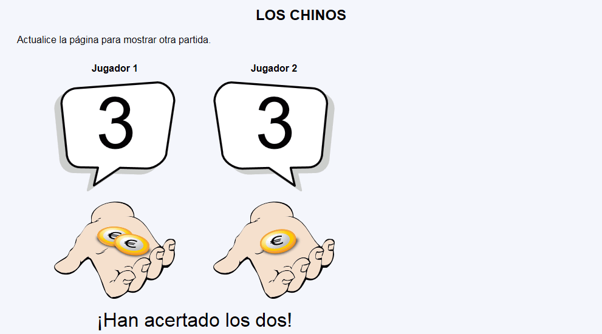
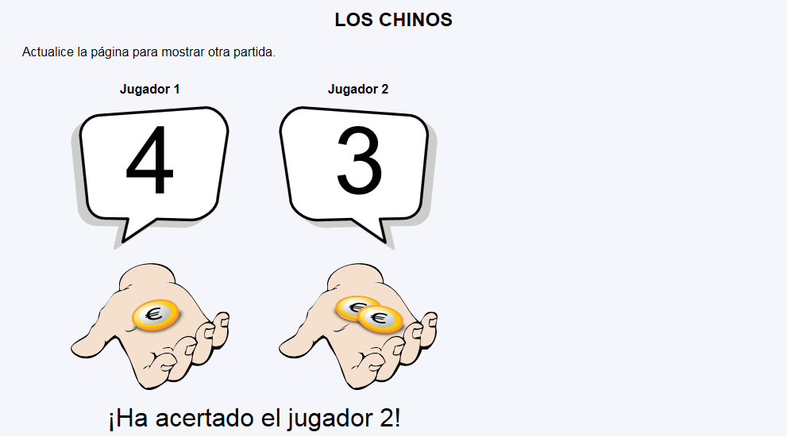
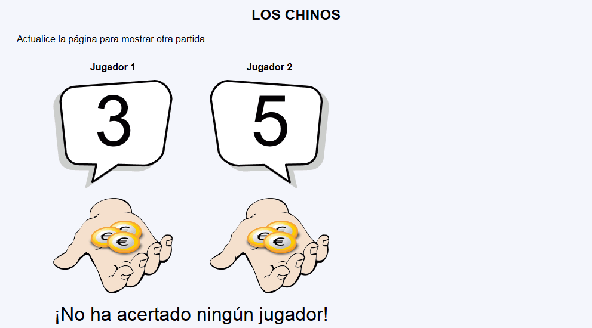

En este ejercicio se debe crear un programa que muestre una partida de un juego muy sencillo: Los chinos.



<h1>Los chinos</h1>
<p>Actualice la página para mostrar otra partida.</p>
<table style="border-spacing: 60px 10px">
<tr>
<th>Jugador 1</th>
<th>Jugador 2</th>
</tr>
<tr>
<td>
<svg version="1.1" xmlns="http://www.w3.org/2000/svg" viewBox="0 0 117.97 107.3" width="200">
<g stroke-width="2" stroke-linecap="round" stroke-linejoin="round">
<path fill="#ccc" stroke="#ccc" d="M94.2 6l-78 5.4C7.6 11.4 1 18 1 26.4L5.8 74c0 8.3 5.4 14.4 13.8 14.4l17 .3-4 17.6L57.8 89l26 .8c8.4 0 19.3-7.5 19.3-16l8-50c0-8.4-8-18-16.5-18z"/>
<path fill="#fff" stroke="#000" d="M100.5 1l-78 5.6C14 6.6 7 13.3 7 21.6L12 69c0 8.6 5.2 14.7 13.6 14.7l17 .3-4 17.4L64 84.2l26 .7c8.4 0 19.3-7.8 19.3-16l7.6-50c0-8.8-8-18-16.8-18z"/>
<text x="60" y="65" text-anchor="middle" style="font-size: 70px">2</text>
</g>
</svg>
</td>
<td>
<svg version="1.1" xmlns="http://www.w3.org/2000/svg" viewBox="0 0 117.97 107.3" width="200">
<g stroke-width="2" stroke-linejoin="round" stroke-linecap="round">
<path fill="#ccc" stroke="#ccc" d="M23.8 6l78 5.4c8.4 0 15.2 6.7 15.2 15L112.2 74c0 8.3-5.4 14.4-13.8 14.4l-17 .3 4 17.6L60 89l-26 .8c-8.3 0-19-7.5-19-16L7 24c0-8.4 8.2-18 16.6-18z"/>
<path fill="#fff" stroke="#000" d="M17.5 1l78 5.6c8.5 0 15.2 6.7 15.2 15L106 69.2c0 8.5-5.4 14.6-13.8 14.6l-17 .3 4 17.6L54 84.3 28 85c-8.6 0-19.5-7.5-19.5-16L1 19C1 10.4 9 1 17.5 1z"/>
<text x="60" y="65" text-anchor="middle" style="font-size: 70px">2</text>
</g>
</svg>
</td>
</tr>
<tr>
<td><img src="img/chinos_1.svg" alt="1" width="200" /></td>
<td><img src="img/chinos_0.svg" alt="0" width="200" /></td>
</tr>
<tr>
<td colspan="2" style="font-size: 200%; text-align: center;">¡No ha acertado ningún jugador!</td>
</tr>
</table>